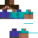

Vítej zpět, Hráč!
Vyber profil a vyraz na server.
Profil:
Minecraft 26.2
Odehráno:
Zatím nehráno

Hráč
Dostupné herní profily
Minecraft 26.3
Minecraft 26.2
Minecraft 26.1.2
Minecraft 1.21.11
Moje servery
MYCHAL SMP
mychalsmp.xyz
Načítám mody z Modrinth...
Postava
Úprava skinu, pláště a herní přezdívky.
3D Náhled
Model těla:
Offline profil
Skin se uloží lokálně do launcheru.
Skin se uloží lokálně do launcheru.
Výchozí skin
Servery
Uložené herní servery a rychlé připojení.
Nastavení
Konfigurace paměti RAM, rozlišení a herního výkonu.
Herní obrazovka a zobrazení
Zvol velikost herního okna, zobrazení na monitoru a grafický režim.
Detekuji grafickou kartu...
Minecraft 26.x
Paměť RAM pro Minecraft
Kolik operační paměti počítače dostane hra pro plynulé načítání světa a chunků.
V počítači: -- GB RAM
4 GB
Herní vylepšení
Automatické funkce usnadňující hraní a propojení se sociálními sítěmi.
Správa a údržba launcheru
Aktualizace na nejnovější verzi a uvolnění místa na pevném disku.
Aktualizace aplikace
Verze: v1.5.2
Údržba disku
Promaže staré logy a crash reporty.
Připraveno.
Pokročilé nastavení systému
Cesta k Java Runtime, argumenty JVM a specifické optimalizace pro Windows a Linux.
Pokročilé
Pokročilé nastavení systému
Cesta k Java Runtime, argumenty JVM a specifické optimalizace pro Windows a Linux.
Optimalizace pro Windows
Windows
Optimalizace pro Linux
Linux
Reset dat
Smaže uložené profily, stažená data a obnoví výchozí nastavení.
Herní konzole & Logy
Čekám na spuštění hry...